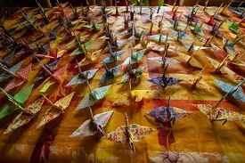
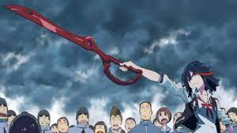

This is a very simple game of rock paper scissors! It's first to 5 points and whoever wins takes the cake, as the kids would say. play by selecting the picture below, either rock, paper, or scissors!

